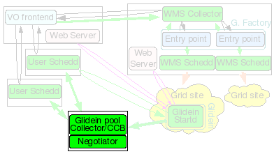

1. Description

The User Pool will be the HTCondor Central Manager for the glidein pool, i.e. it will run the HTCondor Collector and Negotiator daemons. All glideins submitted by the Factories connected to this User Pool will report to it and be available to match with the jobs submitted to the Schedds (User submit nodes) connected to it. These daemons define the glidein pool; if this node dies, the pool dies with it.
2. Hardware requirements
| CPUs | Memory | Disk |
| 1 - 2 | 1+GB | 5+GB |
This machine needs one or two fast CPUs and a moderate amount of memory (1GB should be enough for most tasks; really big pools may need more).
It must have reliable network connectivity and must be on the public internet, with no firewalls; all worker nodes will be continuously sending UDP packets to the Collector.
The machine must be very stable; if the Collector dies, the glidein pool dies with it (There are HTCondor techniques to minimize this damage, but you should still try to choose the stablest machine you can afford.)
The disk needed is just for HTCondor binaries and log files (5GB should be enough)
3. Needed software
See the prerequisites page for a list of software requirements.
4. Installation instructions
The User Pool can be installed either as root or as a non privileged user. Either case, make sure that the user has access to the needed GSI credentials. There is no real advantage to install as root, so non-privileged installation is recommended if installed separately.
See below for a description of the ini file attributes:
| Attribute | Example | Description | Comments |
| install_type | tarball or rpm |
If this is a VOFrontend RPM installation and you are doing a
'--configure', then rpm should be specified. If this is a stand-alone User Collector install, only tarball installations are supported. |
Valid values: tarball, rpm. |
| hostname | usercollector.domain.name | hostname for User Collector. | |
| username | collector (non-root account) | UNIX user account that this services will run under. DO NOT use "root". | For security purposes, this value should always be a non-root user. |
| service_name | userpool | Used as the 'nickname' for the GSI DN in the condor_mapfile of other services. | |
| condor_location | /path/to/condor-userpool | Directory in which the condor software will be installed. | IMPORTANT: The User Collector can share the same instance of HTCondor as the Frontend. The condor_location must not be a subdirectory of the Frontend's install_location or logs_dir. They may share the same parent, however. |
| collector_port | 9618 (HTCondor default) | Defines the HTCondor Collector port. | Optional: default is 9618 (HTCondor default) If multiple glidein services are installed on the same node, this should be unique for each service. |
| number_of_secondary_collectors | 5 | The desired number of secondary collectors to be used. | Optional: default is 0 (zero) A rough estimate is to use one collector per 100 glideins with a hard limit on 200 glideins per collector. |
| x509_cert_dir | /path/to/certificates-location | The directory where the CA certificates are maintained. | The installer will validate for the precesence of *.0 and *.r0 files. If the CAs are installed from the VDT distribution, this will be the VDT_LOCATION/globus/TRUSTED_CA directory. |
| x509_cert | /path-to-cert-location/cert.pm | The location of the certificate file being used. | This file must be owned by the user installing (starting/stopping) this service. Permissions should be 644 or 600. |
| x509_key | /path-to-cert-location/key.pm | The location of the certificate key file being used and associated with the certtificate defined by the x509_cert option above. | This file must be owned by the user installing (starting/stopping) this service. Permissions should be 600 or 400. |
| x509_gsi_dn | dn-subject-of-x509_cert-using-openssl | This is the identity of the certificate used by this service to contact the other HTCondor based GlideinWMS services. |
This is the subject of the certificate
(x509_cert option).
openssl x509 -subject -noout -in [x509_cert]It is used to populate the condor_config file GSI_DAEMON_NAME and condor_mapfile entries of this and the other GlideinWMS services as needed. |
| condor_tarball | /path/to/condor/tarballs/condor-8.7.6-x86_64_RedHat6-stripped.tar.gz | Location of the condor tarball. | The installation script will perform the installation of condor using this tarball. It must be a zipped tarball with a *.tg.tz name. |
| condor_admin_email | whomever@email.com | The email address to get HTCondor notifications in the event of a problem. | Used in the condor_config.local only. |
| vdt_location | /path/to/glidein/vdt | The location of the OSG/VDT client software. | The installer looks for the existence of 2 files to verify if this is a valid OSG/VDT client installation: 1. setup.sh 2. existence of a voms-proxy-init executable. |
| glideinwms_location | /path/to/glideinWMS | Directory of the GlideinWMS software. | Since this is a HTCondor service only, this software is only used during the installation process. |
For example configuration files, see here.
The script to manage the glidein service components is:
glideinWMS/install/manage_glideins
It is recommended to run the validation step before installing. This will help you debug any issues so the install will finish.
./manage_glideins --validate usercollector --ini /path/to/glideinWMS.ini
To install the user pool collector:
./manage_glideins --install usercollector --ini /path/to/glideinWMS.ini
5. To Start/Stop Pool Collector
Setup the environment
source /path/to/condor/location/condor.sh
To start HTCondor run:
/path/to/condor/location/condor start
You should see three processes run as user condor: condor_master, condor_collector and condor_negotiator.
The log files can be found in
/path/to/condor/location/condor_local/log/
To stop HTCondor run:
/path/to/condor/location/condor stop